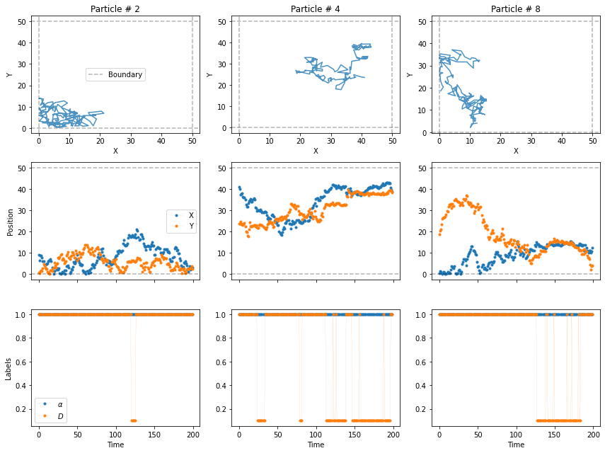

from andi_datasets.datasets_phenom import datasets_phenom
from andi_datasets.utils_trajectories import plot_trajsdatasets_phenom
datasets_phenom
datasets_phenom (models_class=<andi_datasets.models_phenom.models_phenom object at 0x00000199BD2FAA40>)
This class generates, saves and loads datasets of trajectories simulated from various phenomenological diffusion models (available at andi_datasets.models_phenom).
C:\Users\Gorka\miniconda3\envs\andi_datasets\lib\site-packages\fastcore\docscrape.py:225: UserWarning: potentially wrong underline length...
Inputs
------- in
Given a list of dictionaries, generates trajectories of the demanded properties.
The only compulsory input for every dictionary is 'model', i.e. the model from which ...
else: warn(msg)
C:\Users\Gorka\miniconda3\envs\andi_datasets\lib\site-packages\fastcore\docscrape.py:225: UserWarning: Unknown section Inputs
else: warn(msg)datasets_phenom.create_dataset
datasets_phenom.create_dataset (dics=False, T=None, N_model=None, path='', save=False, load=False)
Given a list of dictionaries, generates trajectories of the demanded properties. The only compulsory input for every dictionary is ‘model’, i.e. the model from which trajectories must be generated. The rest of inputs are optional. You can see the input parameters of the different models in andi_datasets.models_phenom, This function checks and handles the input dataset and the manages both the creation, loading and saving of trajectories.
In the example below we create two dictionaries and generate a dataset with it. See the corresponding tutorial for more details.
L = 50
dict_model3 = {'model': 'dimerization',
'L': L,
'Pu': 0.1, 'Pb': 1}
dict_model5 = {'model': 'confinement',
'L': L,
'trans': 0.2}
dict_all = [dict_model3, dict_model5]
trajs, labels = datasets_phenom().create_dataset(N_model = 10, # number of trajectories per model
T = 200,
dics = dict_all
)
plot_trajs(trajs, L , 10,
num_to_plot = 3,
labels = labels,
plot_labels = True
)
Creating, saving and loading trajectories
These auxiliary functions used in create_trajectories that allow for manipulate trajectories in various forms.
C:\Users\Gorka\miniconda3\envs\andi_datasets\lib\site-packages\fastcore\docscrape.py:225: UserWarning: Unknown section Outputs
else: warn(msg)datasets_phenom._create_trajectories
datasets_phenom._create_trajectories ()
Given a list of dictionaries, generates trajectories of the demanded properties. First checks in the .csv of each demanded model if a dataset of similar properties exists. If it does, it loads it from the corresponding file.
datasets_phenom._save_trajectories
datasets_phenom._save_trajectories (trajs, labels, dic, df, dataset_idx, path)
Given a set of trajectories and labels, saves two things:
- In the .csv corresponding to the demanded model, all the input parameters of the generated dataset.
- In a .npy file, the trajectories and labels generated.
datasets_phenom._load_trajectories
datasets_phenom._load_trajectories (model_name, dataset_idx, path)
Given the path for a dataset, loads the trajectories and labels
Managing parameters and dictionaries
datasets_phenom._inspect_dic
datasets_phenom._inspect_dic (dic)
Checks the information of the input dictionaries, complete missing information with default values and then decides about loading/saving depending on parameters.
datasets_phenom._get_args
datasets_phenom._get_args (model, return_defaults=False)
Given the name of a diffusion model, return its inputs arguments.